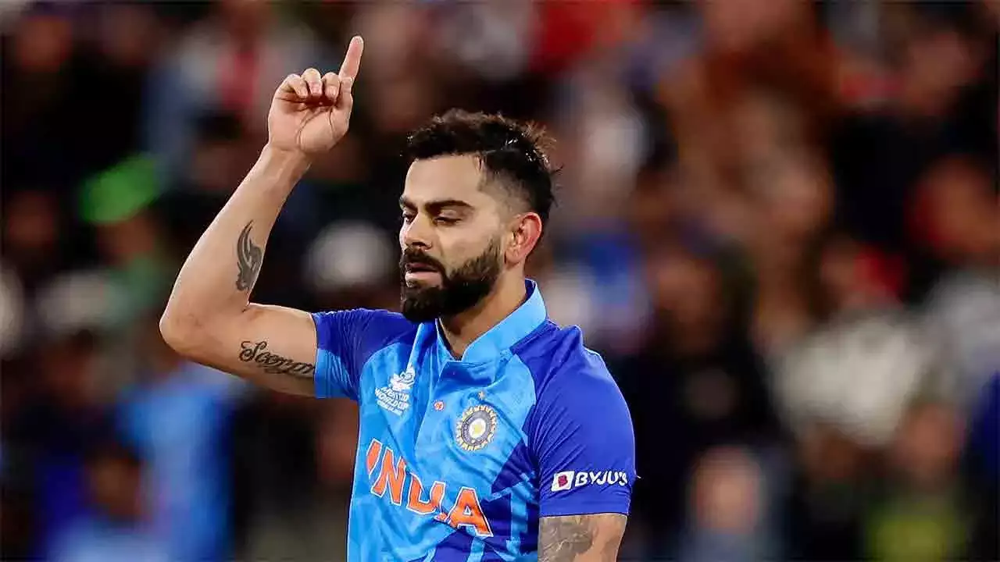
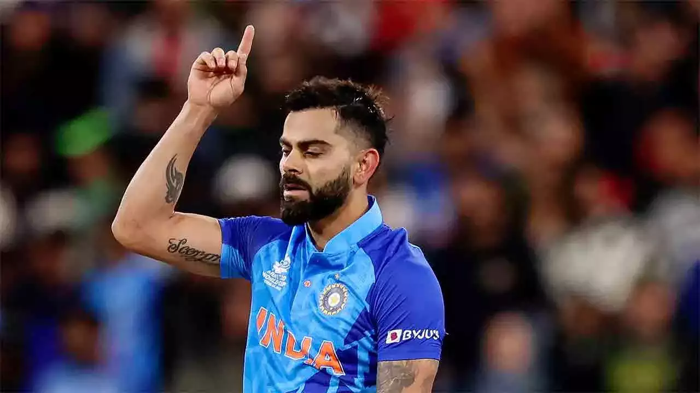

About
Virat Kohli is an Indian international cricketer and the former captain of the Indian national cricket team who plays as a right-handed batsman for Royal Challengers Bangalore in the IPL and for Delhi in Indian domestic cricket. Widely regarded as one of the greatest batsmen of all time,Kohli holds the records for scoring most runs in T20 internationals and in the IPL. In 2020, the International Cricket Council named him the male cricketer of the decade. Kohli has also contributed to India's successes, including winning the 2011 World Cup and the 2013 Champions trophy. Born and raised in New Delhi, Kohli trained at the West Delhi Cricket Academy and started his youth career with the Delhi Under-15 team. He made his international debut in 2008 and quickly became a key player in the ODI team and later made his Test debut in 2011. In 2013, Kohli reached the number one spot in the ICC rankings for ODI batsmen for the first time. During 2014 T20 World Cup, he set a record for the most runs scored in the tournament. In 2018, he achieved yet another milestone, becoming the world's top-ranked Test batsman, making him the only Indian cricketer to hold the number one spot in all three formats of the game. His form continued in 2019, when he became the first player to score 20,000 international runs in a single decade. In 2021, Kohli made the decision to step down as the captain of the Indian national team for T20Is, following the T20 World Cup and in early 2022 he stepped down as the captain of the Test team as well.
Achievements
| Year | Achievement |
|---|---|
| 2008: | ICC Under-19 World Cup Winner |
| 2011: | ICC World Cup Winner |
| 2013: | Wisden Leading Cricketer in the World |
| 2017: | Sir Garfield Sobers Trophy for ICC Cricketer of the Year |
| 2018: | ICC Cricketer of the Year |
| 2019: | Rajiv Gandhi Khel Ratna Award |
Gallery
 

Other Athlete
-
 Usain Bolt
Usain Bolt
Sprinting -
Smriti Mandana
Cricket -
 Sushil Kumar
Sushil Kumar
Indian wrestler -
 Allison Stokke
Allison Stokke
pole vaulting -
 Katie Ledecky
Katie Ledecky
Swimming